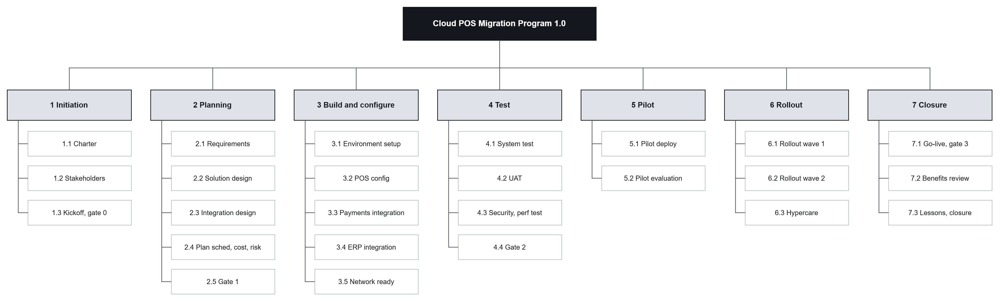

Section 3 of 9
Scope and WBS
Section owner: Resham Thapa
This section defines what is in and out of scope and breaks the work into a structured WBS.
Scope statement
In scope: platform build and configuration, payment and ERP integration, system and user testing, a pilot store, the first-region rollout in two waves, staff training, and hypercare through stabilisation.
Exclusions
Out of scope: national rollout waves beyond the first region, hardware refresh of non-POS devices, new loyalty features, and full decommissioning of legacy systems beyond the cutover.
Work breakdown structure

Image slot: images/dio_wbs.pngScope control
Scope changes go through a simple change process. A change request is captured, assessed for impact on the schedule and the baseline cost, and approved or rejected before any work begins, which protects the fixed go-live date.